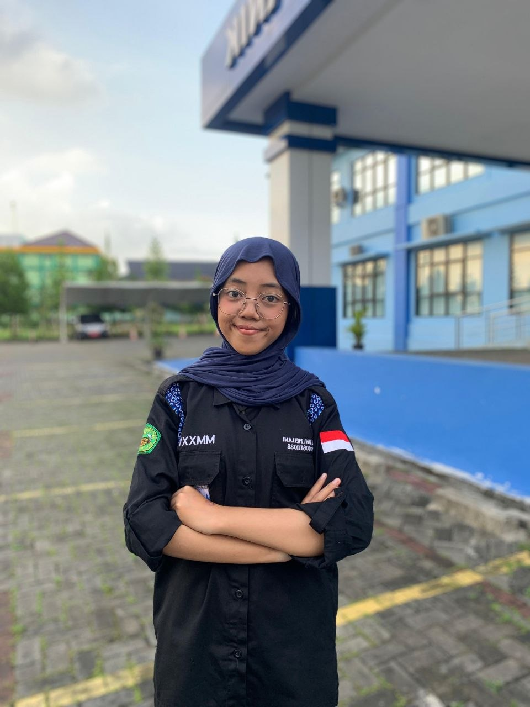

PROFIL DEVELOPER

DITA DWI MEILANI
Informatics Student & Web Developer
Merupakan mahasiswa Universitas Siliwangi angkatan 2025 yang sedang antusias mendalami dunia UI/UX design dan web development. Symatika ini merupakan proyek website keduanya, yang ia rancang sebagai ruang belajar untuk mengasah kemampuan coding sekaligus menciptakan platform yang bermanfaat buat sesama mahasiswa Informatika.
E-mail: dwikumeilani@gmail.com
No.Hp: +62 821-2186-6599
BUILT WITH
Figma
UI/UX Design platform untuk merancang visual web.
HTML5
Tulang punggung struktural utama markup platform.
CSS3
Merajut estetika darkmode dan layout modern.
JavaScript
Menghidupkan logika interaktif pada komponen website.